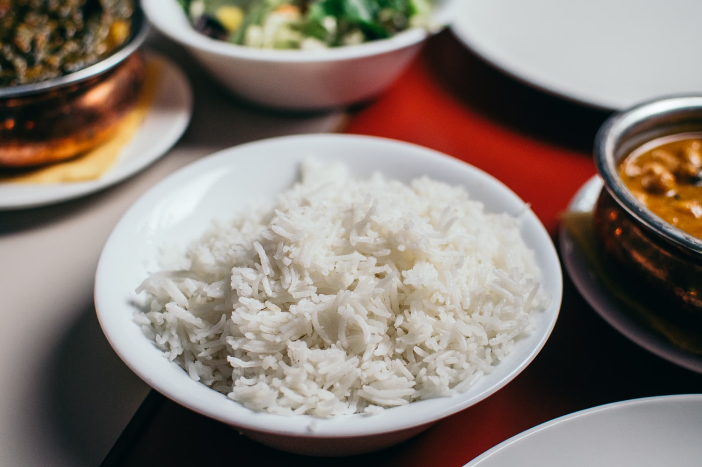

<div class="project-content-top">
        <b>Open Rice</b>
        <p>Node / React</p>
    </div>
    
    <div class="project-content-bot">
        <a href="https://open-rice.herokuapp.com/ target="_blank">
            <div class="press" 
                onmouseover="projectPress(this)"
                onmouseout="reverseProjectPress(this)"
            >Check it out</div>
        </a>
</div>